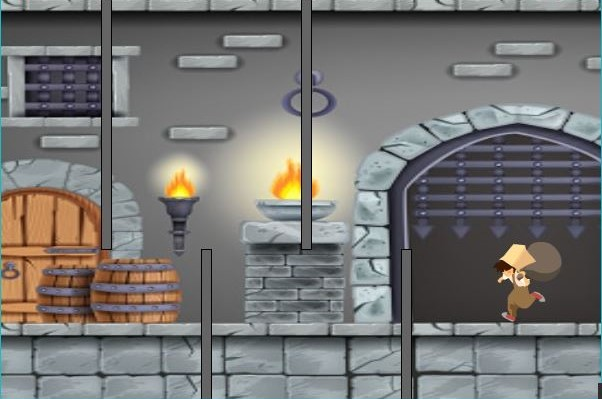
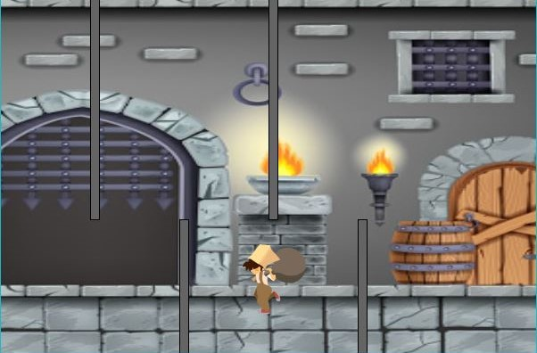
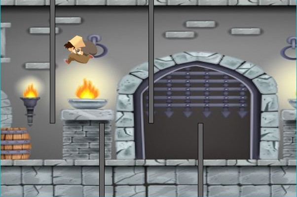

El primer trabajo de objetos fue bastante simple, teniamos que hacer clases y llamarlas entre si, habia una que tenia que ser la principal, es decir, en la que se maneje todo el programa. Mi mini-videojuego se baso en pasar de una zona a la otra de la pantalla, teniendo que esquivar 4 obstaculos en vertical. Y se viene el ultimo trabajo practico del año...
CONSIGNA: Crear una aplicación básica que comience a aprovechar el potencial de la programación orientada a objetos. A partir de la propuesta didáctica presentada en la comisión. Cada docente va a definir la dinámica de sus actividades (es decir, en la comisión les van a contar qué tienen que hacer).
Codigo Video Explicativo


